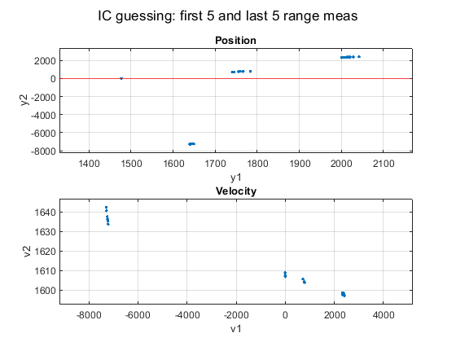

Contents
set 4, prob 4 (Exam 2 version)
clear; clc
load radarmeasdata_missile_new.mat
global la lb
la = 3.5e5;
lb = 4.0e5;
sigma_rhoa = 10;
sigma_rhob = 30;
sigma_thetaa = 0.01;
sigma_thetab = 0.03;
R_aj = zeros(4);
R_aj(1,1) = sigma_rhoa^2;
R_aj(2,2) = sigma_thetaa^2;
R_aj(3,3) = sigma_rhob^2;
R_aj(4,4) = sigma_thetab^2;
R = zeros(length(thist));
for j = 1:length(thist)
R(4*j-3 : 4*j, 4*j-3 : 4*j) = R_aj;
end
Ra = chol(R);
zhist = [];
for j = 1:length(thist)
zhist = [ zhist; rhoahist(j); thetaahist(j); rhobhist(j); thetabhist(j) ];
end
Initial condition guessing
xg0_arr = [];
for i = 1:5
for f = 23:28
xg0 = find_xg0(rhoahist, rhobhist, thist, i, f);
xg0_arr = [xg0_arr; xg0'];
end
end
y = [xg0_arr(:,1), xg0_arr(:,3)];
ftitle = 'IC guessing: first 5 and last 5 range meas';
figure('name', ftitle);
subplot(2,1,1)
plot(y(:,1), y(:,2),'.')
grid on; hold on;
yline(0, 'r')
xlabel('y1'); ylabel('y2');
bigger_ylim; bigger_xlim
title('Position');
subplot(2,1,2)
plot(xg0_arr(:,3), xg0_arr(:,4), '.');
grid on; hold on;
xlabel('v1'); ylabel('v2');
bigger_ylim; bigger_xlim
title('Velocity');
sgtitle(ftitle);
Warning: Imaginary parts of complex X and/or Y arguments ignored.
Warning: Imaginary parts of complex X and/or Y arguments ignored.

this one looks good
xg0_OG = find_xg0(rhoahist, rhobhist, thist, 3, 25);
xg0 = xg0_OG;
Jacobian H
x = sym('x', [4 1]);
syms la_sym lb_sym tj g
y1 = x(1) + x(2)*tj;
dy_1a = la_sym - y1;
dy_1b = lb_sym - y1;
dy_2 = x(3) + tj * x(4) - 4.9*tj^2;
h_rhoa = sqrt( dy_1a^2 + dy_2^2 );
h_rhob = sqrt( dy_1b^2 + dy_2^2 );
h_thetaa = atan2( dy_2, dy_1a );
h_thetab = atan2( dy_2, dy_1b );
Hhist_j = matlabFunction( [ jacobian(h_rhoa, x); jacobian(h_thetaa, x); jacobian(h_rhob, x); jacobian(h_thetab, x) ] );
First cost function
[Jg, h, H, dx] = cost_fn(xg0, thist, zhist, Ra);
a = 1;
xg = xg0 + a * dx;
[Jgnew, h, H, ~] = cost_fn(xg, thist, zhist, Ra);
The while loop: Jgnew > Jg
Jg_i = [];
while norm(dx) > 1e-10
while Jgnew >= Jg
a = a/2;
if a < 0.001
break; end
xg = xg0 + a * dx;
[Jgnew, h, H, ~] = cost_fn(xg, thist, zhist, Ra);
end
While loop: "New" first guess - saved from last iteration
xg0 = xg;
Jg = Jgnew;
z = inv(Ra') * zhist;
dx = inv((H' * H)) * H' * (z - h);
a = 1;
xg = xg0 + a * dx;
[Jgnew, h, H, ~] = cost_fn(xg, thist, zhist, Ra);
Jg_i = [Jg_i; Jg];
end
xg0_sol = xg0;
output
xg0_OG
xg0_sol
Pxx = inv(H' * H)
xg0_OG =
2019.29620390645
899.18143927834
2349.46128871635
1597.49910053977
xg0_sol =
2009.37317814594
899.930080622059
2250.33006742259
1598.79191840316
Pxx =
Columns 1 through 3
31.8997213721099 -0.30908532089346 64.0179446060091
-0.30908532089346 0.0211683191056676 2.16647104432631
64.0179446060091 2.16647104432631 721.526969961695
-0.520479035921301 0.0173132374010027 0.0216977157580697
Column 4
-0.520479035921301
0.0173132374010027
0.0216977157580697
0.0211932737104806
subfunctions
function h = h_NL(x, t)
global la lb
h = [];
for i = 1:length(t)
y1 = x(1) + x(2)*t(i);
dy_1a = la - y1;
dy_1b = lb - y1;
dy_2 = x(3) + x(4)*t(i) - 4.9*t(i)^2;
h_rhoa = sqrt( dy_1a^2 + dy_2^2 );
h_rhob = sqrt( dy_1b^2 + dy_2^2 );
h_thetaa = atan2( dy_2, dy_1a );
h_thetab = atan2( dy_2, dy_1b );
h = [h; h_rhoa; h_thetaa; h_rhob; h_thetab];
end
end
function H = Hhist(x, thist)
global la lb
Hhist_j = @(la_sym,lb_sym,tj,x1,x2,x3,x4)reshape([(1.0./sqrt((-la_sym+x1+tj.*x2).^2+(x3+tj.*x4-tj.^2.*(4.9e+1./1.0e+1)).^2).*(la_sym.*-2.0+x1.*2.0+tj.*x2.*2.0))./2.0,-(real(tj.^2).*(4.9e+1./1.0e+1)+imag(tj.*x2)-real(tj.*x4)-imag(la_sym)+imag(x1)-real(x3))./((imag(tj.^2).*(-4.9e+1./1.0e+1)+imag(tj.*x4)+real(tj.*x2)-real(la_sym)+imag(x3)+real(x1)).^2+(real(tj.^2).*(4.9e+1./1.0e+1)+imag(tj.*x2)-real(tj.*x4)-imag(la_sym)+imag(x1)-real(x3)).^2),(1.0./sqrt((-lb_sym+x1+tj.*x2).^2+(x3+tj.*x4-tj.^2.*(4.9e+1./1.0e+1)).^2).*(lb_sym.*-2.0+x1.*2.0+tj.*x2.*2.0))./2.0,-(real(tj.^2).*(4.9e+1./1.0e+1)+imag(tj.*x2)-real(tj.*x4)-imag(lb_sym)+imag(x1)-real(x3))./((imag(tj.^2).*(-4.9e+1./1.0e+1)+imag(tj.*x4)+real(tj.*x2)-real(lb_sym)+imag(x3)+real(x1)).^2+(real(tj.^2).*(4.9e+1./1.0e+1)+imag(tj.*x2)-real(tj.*x4)-imag(lb_sym)+imag(x1)-real(x3)).^2),tj.*1.0./sqrt((-la_sym+x1+tj.*x2).^2+(x3+tj.*x4-tj.^2.*(4.9e+1./1.0e+1)).^2).*(-la_sym+x1+tj.*x2),((imag(tj)./(imag(tj.^2).*(-4.9e+1./1.0e+1)+imag(tj.*x4)+real(tj.*x2)-real(la_sym)+imag(x3)+real(x1))-real(tj).*(real(tj.^2).*(4.9e+1./1.0e+1)+imag(tj.*x2)-real(tj.*x4)-imag(la_sym)+imag(x1)-real(x3)).*1.0./(imag(tj.^2).*(-4.9e+1./1.0e+1)+imag(tj.*x4)+real(tj.*x2)-real(la_sym)+imag(x3)+real(x1)).^2).*(imag(tj.^2).*(-4.9e+1./1.0e+1)+imag(tj.*x4)+real(tj.*x2)-real(la_sym)+imag(x3)+real(x1)).^2)./((imag(tj.^2).*(-4.9e+1./1.0e+1)+imag(tj.*x4)+real(tj.*x2)-real(la_sym)+imag(x3)+real(x1)).^2+(real(tj.^2).*(4.9e+1./1.0e+1)+imag(tj.*x2)-real(tj.*x4)-imag(la_sym)+imag(x1)-real(x3)).^2),tj.*1.0./sqrt((-lb_sym+x1+tj.*x2).^2+(x3+tj.*x4-tj.^2.*(4.9e+1./1.0e+1)).^2).*(-lb_sym+x1+tj.*x2),((imag(tj)./(imag(tj.^2).*(-4.9e+1./1.0e+1)+imag(tj.*x4)+real(tj.*x2)-real(lb_sym)+imag(x3)+real(x1))-real(tj).*(real(tj.^2).*(4.9e+1./1.0e+1)+imag(tj.*x2)-real(tj.*x4)-imag(lb_sym)+imag(x1)-real(x3)).*1.0./(imag(tj.^2).*(-4.9e+1./1.0e+1)+imag(tj.*x4)+real(tj.*x2)-real(lb_sym)+imag(x3)+real(x1)).^2).*(imag(tj.^2).*(-4.9e+1./1.0e+1)+imag(tj.*x4)+real(tj.*x2)-real(lb_sym)+imag(x3)+real(x1)).^2)./((imag(tj.^2).*(-4.9e+1./1.0e+1)+imag(tj.*x4)+real(tj.*x2)-real(lb_sym)+imag(x3)+real(x1)).^2+(real(tj.^2).*(4.9e+1./1.0e+1)+imag(tj.*x2)-real(tj.*x4)-imag(lb_sym)+imag(x1)-real(x3)).^2),(1.0./sqrt((-la_sym+x1+tj.*x2).^2+(x3+tj.*x4-tj.^2.*(4.9e+1./1.0e+1)).^2).*(x3.*2.0+tj.*x4.*2.0-tj.^2.*(4.9e+1./5.0)))./2.0,-(imag(tj.^2).*(-4.9e+1./1.0e+1)+imag(tj.*x4)+real(tj.*x2)-real(la_sym)+imag(x3)+real(x1))./((imag(tj.^2).*(-4.9e+1./1.0e+1)+imag(tj.*x4)+real(tj.*x2)-real(la_sym)+imag(x3)+real(x1)).^2+(real(tj.^2).*(4.9e+1./1.0e+1)+imag(tj.*x2)-real(tj.*x4)-imag(la_sym)+imag(x1)-real(x3)).^2),(1.0./sqrt((-lb_sym+x1+tj.*x2).^2+(x3+tj.*x4-tj.^2.*(4.9e+1./1.0e+1)).^2).*(x3.*2.0+tj.*x4.*2.0-tj.^2.*(4.9e+1./5.0)))./2.0,-(imag(tj.^2).*(-4.9e+1./1.0e+1)+imag(tj.*x4)+real(tj.*x2)-real(lb_sym)+imag(x3)+real(x1))./((imag(tj.^2).*(-4.9e+1./1.0e+1)+imag(tj.*x4)+real(tj.*x2)-real(lb_sym)+imag(x3)+real(x1)).^2+(real(tj.^2).*(4.9e+1./1.0e+1)+imag(tj.*x2)-real(tj.*x4)-imag(lb_sym)+imag(x1)-real(x3)).^2),tj.*1.0./sqrt((-la_sym+x1+tj.*x2).^2+(x3+tj.*x4-tj.^2.*(4.9e+1./1.0e+1)).^2).*(x3+tj.*x4-tj.^2.*(4.9e+1./1.0e+1)),-((real(tj)./(imag(tj.^2).*(-4.9e+1./1.0e+1)+imag(tj.*x4)+real(tj.*x2)-real(la_sym)+imag(x3)+real(x1))+imag(tj).*(real(tj.^2).*(4.9e+1./1.0e+1)+imag(tj.*x2)-real(tj.*x4)-imag(la_sym)+imag(x1)-real(x3)).*1.0./(imag(tj.^2).*(-4.9e+1./1.0e+1)+imag(tj.*x4)+real(tj.*x2)-real(la_sym)+imag(x3)+real(x1)).^2).*(imag(tj.^2).*(-4.9e+1./1.0e+1)+imag(tj.*x4)+real(tj.*x2)-real(la_sym)+imag(x3)+real(x1)).^2)./((imag(tj.^2).*(-4.9e+1./1.0e+1)+imag(tj.*x4)+real(tj.*x2)-real(la_sym)+imag(x3)+real(x1)).^2+(real(tj.^2).*(4.9e+1./1.0e+1)+imag(tj.*x2)-real(tj.*x4)-imag(la_sym)+imag(x1)-real(x3)).^2),tj.*1.0./sqrt((-lb_sym+x1+tj.*x2).^2+(x3+tj.*x4-tj.^2.*(4.9e+1./1.0e+1)).^2).*(x3+tj.*x4-tj.^2.*(4.9e+1./1.0e+1)),-((real(tj)./(imag(tj.^2).*(-4.9e+1./1.0e+1)+imag(tj.*x4)+real(tj.*x2)-real(lb_sym)+imag(x3)+real(x1))+imag(tj).*(real(tj.^2).*(4.9e+1./1.0e+1)+imag(tj.*x2)-real(tj.*x4)-imag(lb_sym)+imag(x1)-real(x3)).*1.0./(imag(tj.^2).*(-4.9e+1./1.0e+1)+imag(tj.*x4)+real(tj.*x2)-real(lb_sym)+imag(x3)+real(x1)).^2).*(imag(tj.^2).*(-4.9e+1./1.0e+1)+imag(tj.*x4)+real(tj.*x2)-real(lb_sym)+imag(x3)+real(x1)).^2)./((imag(tj.^2).*(-4.9e+1./1.0e+1)+imag(tj.*x4)+real(tj.*x2)-real(lb_sym)+imag(x3)+real(x1)).^2+(real(tj.^2).*(4.9e+1./1.0e+1)+imag(tj.*x2)-real(tj.*x4)-imag(lb_sym)+imag(x1)-real(x3)).^2)],[4,4]);
H = [];
for j = 1:length(thist)
H = [ H; Hhist_j(la, lb, thist(j), x(1), x(2), x(3), x(4)) ];
end
end
function [Jg, h, H, dx] = cost_fn(xg, thist, zhist, Ra)
h = inv(Ra') * h_NL(xg, thist);
H = inv(Ra') * Hhist(xg, thist);
z = inv(Ra') * zhist;
dx = inv((H' * H)) * H' * (z - h);
Jg = norm(z - h);
end
function xg0_OG = find_xg0(rhoahist, rhobhist, thist, i, f)
clear x
p_ai = rhoahist(i);
p_bi = rhobhist(i);
global la lb
y_1i = 1/( 2*lb - 2*la ) * ( p_ai^2 - la^2 - p_bi^2 + lb^2);
y_2i = sqrt( p_ai^2 - ( la - y_1i )^2 );
p_af = rhoahist(f);
p_bf = rhobhist(f);
y_1f = 1/( 2*lb - 2*la ) * ( p_af^2 - la^2 - p_bf^2 + lb^2 );
y_2f = sqrt( p_af^2 - ( la - y_1f )^2 );
ti = thist(i); tf = thist(f);
x = pinv( [ 1 ti; 1 tf ] ) * [y_1i; y_1f];
y_10 = x(1);
v_10 = x(2);
x = pinv( [ 1 ti; 1 tf ] ) * ( [ y_2i; y_2f ] + 4.9 * [ ti^2; tf^2 ] );
y_20 = x(1);
v_20 = x(2);
t = [ 0; -0.5 * 9.8 * ti^2; 0; -0.5 * 9.8 * tf^2 ];
y = [y_1i; y_2i; y_1f; y_2f];
A = [1, ti, 0, 0;
0, 0, 1, ti;
1, tf, 0, 0;
0, 0, 1, tf ];
x = pinv( A ) * (y - t);
xg0_OG = [y_10; v_10; y_20; v_20];
end